2016年有一件大事发生 。10月19日这一天，在人民大会堂，肯帝亚发布了一款“敢说0甲醛，铺好就能搬”的超级地板。这一天诞生的超级地板有什么特别之处？为何能在短时间内，吸引肯帝亚所有经销商的关注？为何能在短时间内，刮起一股席卷全国的购买风潮？为何能在短时间内，就能参加华与华超级案例竞赛？
一企业就做两件事：创新和营销
华与华方法中有一条重要的指导思想：企业是社会的器官，任何企业得以生存，都是因为它满足了社会某一方面的需要，实现了某种特殊的社会目的，这是企业最深的本质—这条思想来自德鲁克。在中国，乃至世界范围，家装行业一大痛点就是甲醛。甲醛是室内污染的头号杀手，毒性强、释放周期长达到8-15年，尤其对老人、小孩、孕妇等免疫力低下的人群危害极大，它不但引发儿童白血病，并影响儿童智力发育和免疫系统发育。尤其是地板产品当中，曾经风靡市场的强化地板，花色丰富时尚又耐磨，但甲醛超标事件被频频报道后，消费者闻甲醛而色变。
有没有一款地板能做到既有颜值（花色丰富），又有实力呢（不仅 0 甲醛，还要耐磨、泡水不变形）？带着这些问题，肯帝亚自成立伊始，就一直以创新为己任，重金投入研发，直到2016年一款“全新材料的0甲醛地板”问世。
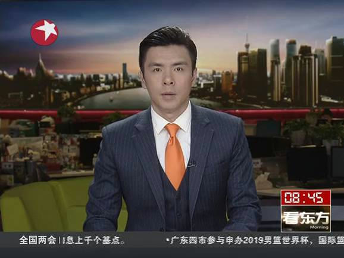
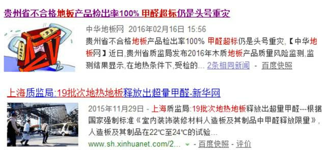
▲ 健康0甲醛，妈妈放心
采用SPP石岩粉高分子材料、蓝色柔韧回弹科技等「独家专利技术」肯帝亚新材料地板，全程无需使用任何胶水，从原料到生产工艺真正实现0甲醛的同时，还具有防水防滑、静音、耐磨等诸多优势，是复合地板的升级换代产品。肯帝亚新材料地板虽然优势显著，但毕竟是一个新鲜的事物，如何让老百姓接受？怎样去引导消费者？肯帝亚董事长郦海星陷入了深思........仅是这款新材料地板的命名，就让他思虑再三。最终，肯帝亚高层会议商议决定，找一家国内顶尖的营销咨询公司，为这款新材料地板进入市场保驾护航。
二产品命名命名就是成本，命名就是召唤，命名就是投资。2015年 12 月，是肯帝亚和华与华的第一次会面。会议现场在对这款地板的各项性能了解之后，项目组当场就迸发了不同凡响的创意产品名：「肯帝亚超级地板」。项目组明白，命名即召唤，新产品需要一个新命名，不仅听起来足够霸气，而且消费者耳熟能详，朗朗上口；既能体现肯帝亚这款新产品的超凡功能性，还能体现它优于其它任何一款地板的实用性。“超级地板”的创意就这样在现场诞生了。（我相信你一定知道“超级英雄”、“超级女声”以及“超级”这个词本身的意义，还需要解释吗，你懂得······）
依托这个命名，项目组为肯帝亚超级地板构建了8大超级话语体系：1.超防水，泡水不变形不起泡超级地板表层经UV环氧树脂工艺处理，拥有完美的防水工艺性能。
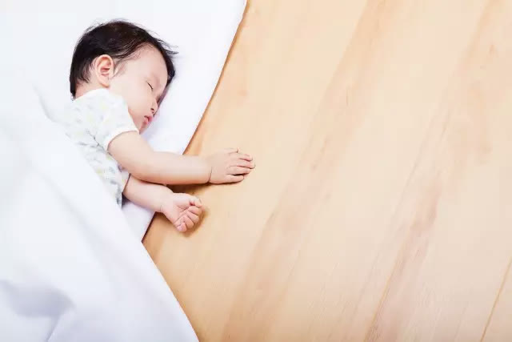
2.超防滑，遇水更具摩擦力表面超级耐磨层具有独特防滑性能，遇水反而增加脚下摩擦力，降低滑倒风险，成为机场等大型公共场所首选地面装饰材料。3.超柔韧，孩子老人摔不疼超级地板采用创新柔韧回弹科技，让您和家人在地板上尽情嬉戏时，不再担心摔疼。4.超静音，吸走20分贝噪音在机场、医院、学校、百货商场等大型公共场所，超级地板能吸走20分贝噪音。一踏足超级地板，世界就仿佛安静了下来。5.超耐磨，耐磨指标优于国家标准在耐磨度上，超级地板又有新突破。耐磨系数高达10000转以上，耐磨指标远优于国家标准。6.超防火，离火自然灭超级地板防火级别达到B1级，离火自然灭，厨房铺超级地板，更安全。7.超耐用，持续使用20年基材层由石岩粉构成，天然具备矿物岩石的稳定性和坚韧性，令超级地板防腐耐用，可持续使用20年。8.超保温，专为地暖而生表面UV环氧树脂工艺保温效果明显，达到一定温度后，能长久保持热度，实现节能降耗，夏天效果一样哟！
▲肯帝亚超级地板具有0甲醛、超耐磨、超静音、超弹性、超防水、超防滑等优势，这种材料的地板在欧美畅销多年
三去现场，一切创意在现场万事开头难！难事从头做，华与华始终贯彻“三现”主义，去到现场，感受现实，触摸现物。2015 年 12 月初，肯帝亚和华与华达成合作。12月底，肯帝亚项目组迅速展开前期调研等工作。从高层访谈开始，项目组开始探索、寻找这个企业本身所具有的企业资源禀赋，并将其梳理记录，为
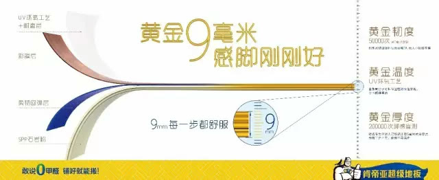
后续战略的制定打下重要基础。调研的关键就是要了解消费者的故事，故事里有时间、地点、过程和情绪。华与华的调研方法论：一切调研都在现场。我们坚信只有深入市场，才能发掘消费者痛点，并创造出最强势、最准确、最卖货的超级符号。
▲ 市场一线，留下了我们的背影和肯帝亚的传说
随后华与华深入市场一线，去充当消费者，去和店员交谈，去亲自卖地板还原真实消费场景。项目组知道只有和消费者面对面聊，就像拉家常那样聊，才能找到消费者真正的需求和痛点。 20 天走访 7 个省份，拿出 10 大品牌提升方案，终于形成了肯帝亚品牌的初步战略构思。
四超级符号，惊鸿一瞥在对国内建材行业及消费者充分调研后，项目组开始了超级符号的探寻之路。你可以想象华与华的设计总监和策略总监当街碰撞创意火花的场景，但你体会不了当创意涌上大脑，不约而同的兴奋是多么让人激动！什么是超级符号？能让亿万消费者对一个陌生的新品牌，只看一眼，听一声，就能够记住它、熟悉他、喜欢它，并乐意掏钱购买它，甚至逢人就爱谈论它！ 超级符号能够让一个新品牌，在一夜之间，成为亿万消费者熟悉的老朋友，并且能迅速建立起品牌偏好，发动大规模购买。新的产品，要让人熟悉并且喜欢，这就需要把它嫁接到消费者本来就熟悉，就喜欢的符号上去。
超级符号-肯帝亚先生人格化形象，是品牌永远的代言人，是品牌永远的文化原力。比如，横扫全球的威猛先生。华与华为肯帝亚创作了代表力量、信赖与承诺的「肯帝亚先生」，肯帝亚先生的形象为肯帝亚注入超强识别度与超强信赖感，也为肯帝亚的百年发展里程注入一股强心剂。
肯帝亚超级先生的强势品牌形象，令人一见如故，过目不忘。竖起的大拇指超级自信，信任感十足。肯帝亚超级先生肩上的喜鹊象征「健康、环保、吉祥」，增加了肯帝亚先生的亲切感，也传达了绿色环保的品牌理念，寓意肯帝亚有开启「中国家装材料超级健康新时代」的决心。超级符号-蓝黄色系经过调研走访，在肯帝亚品牌战略的制定上，华与华找到了最适合地板的蓝黄建材色系，黄色代表健康、活力和强烈视觉冲击力；蓝色代表着科技、安全和稳健。
▲ 肯帝亚蓝黄色系
超级符号-人字拼花边花边战略是华与华超级符号的核心方法之一，就像我们都知道Burberry的格子，无论走到全球，只要你看到格子，那就是 Burberry ，从 LOGO 、海报到店面、产品传播上到处都可以看见花边的元素。关于地板，我们印象最深刻最经典的记忆莫过于人字拼。所以属于肯帝亚的超级花边——人字拼就这样诞生了。
▲ 肯帝亚超级花边战略
在品牌色系与形象确定之后，我们还缺少一句最关键、最能卖货的超级话语，那就是如何用一句话就说动消费者购买？
五超级话语，直击痛点，促成购买带着问题，项目组穿梭于各大建材市场，他们扮演导购员、夫妻老婆店主，一待就是一整天。在现场，观察消费者的购买场景。项目组没有放过任何产品信息与优势，在超级地板的众多优势当中，最终发现能够打动消费者的还是 0 甲醛的健康需求。兰州消费者小颖“我们逛了一天没有哪一家说零甲醛，就你们家说，我才愿意留下来听你们说”。
▲ 就这样诞生了！
「敢说 0甲醛 」是消费者原话，也是最认可的话，直接刺激消费者神经。敢说是口语，理解成本低，便于传播，敢说可以进行分类，我是敢说的，但别人是不敢说的。「铺好就能搬」给出具体的利益和结果，打动消费者。「敢说0甲醛 铺好就能搬」不仅可以印在广告画面上，还是导购能随口说出的销售话语。这句超级话语完全来源于市场，源于消费者诉求，更源于肯帝亚的产品优势。
故事一则：项目组在口号和形象推出后，再次回到市场去现场检测效果，在一家竞品门店试探性购买时，店员经常脱口而出，你去看这里谁家“敢说 0 甲醛”！我们听完，看着店员，心里忍不住说：肯帝亚超级地板就敢呀！
六肯帝亚六步神执行，华与华超级案例来在品牌推广中，创意是关键性力量，执行是决定性力量。肯帝亚雷厉风行的神执行，由肯帝亚的顶层开始，贯彻到终端的方方面面。
1 举行品牌战略发布会肯帝亚与华与华共同确定企业战略后，立即召集肯帝亚全体员工和全国经销商开始了主题为「卖超级地板，做超级老板」的品牌战略发布会，全新的品牌形象为肯帝亚带来更加健康、更加国际的品牌新力量。
▲ 肯帝亚集团郦海星董事长带领所有员工共同听取了华与华做的品牌战略发布会
▲ 肯帝亚郦海星董事长（中）与华与华合伙人贺绩（右）、策略总监杨鹏宏（左），共同为肯帝亚先生揭幕

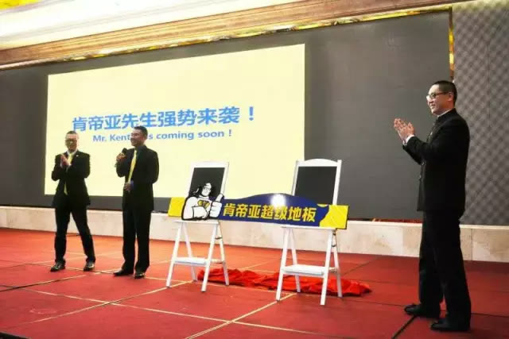
▲ 肯帝亚家人们，赞
基于华与华提出的品牌战略，肯帝亚按照厂房的设计画面立即着手喷刷旗下厂房，并将肯帝亚超级先生形象与超级厂房相结合，喷涂后的品牌效果格外醒目。
▲ 基于华与华提出的品牌战略，肯帝亚立即着手喷刷旗下厂房
2 在市场大力推广与集团合作的各地经销商积极响应，纷纷在建材市场、街边和小区门口大力投放广告，经销商甚至将自己的货车和私家车也全部喷上了广告画面。由此，经销商的执行力可见一斑。
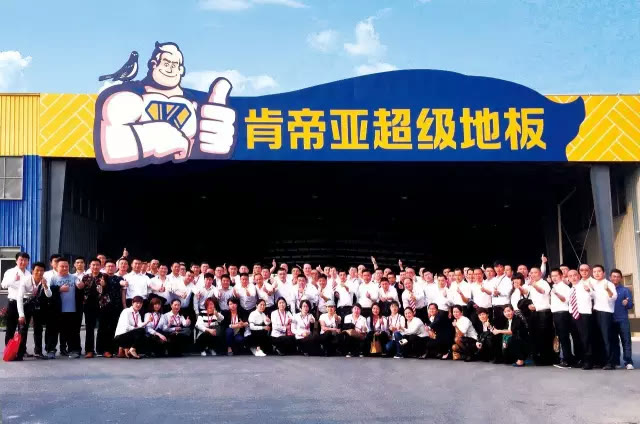
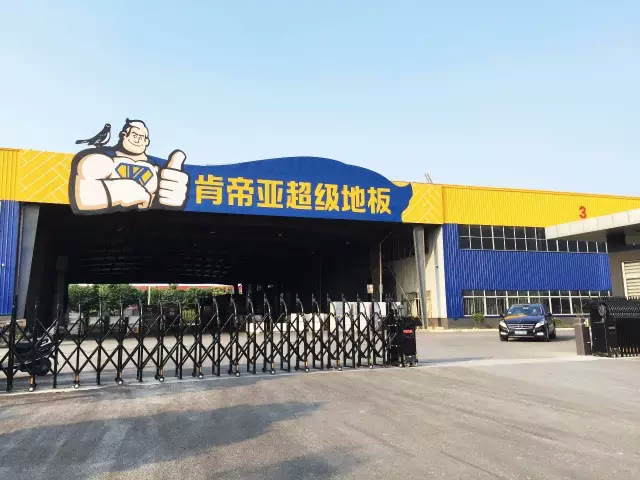
▲ 肯帝亚经销商升级室内店门头
▲ 肯帝亚经销商升级户外店门头

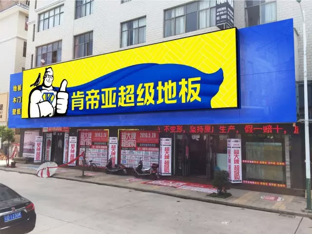
▲ 肯帝亚经销商的超级专车
品牌的推广离不开广告，更离不开经销商的全力支持。对肯帝亚新品牌形象与企业战略高度认可的经销商们，都尽最大能力在自己所属的区域内投放广告。广告投放面之广与铺设速度之快，让华与华大为惊叹。
▲ 各地经销商大力投放广告
▲ 湖北蕲春100平米户外广告画面
3 升级改造终端门头在建材市场广告打响的同时，大批经销商看见华与华新设计的门店和品牌视觉系统时，他们没有犹豫、没有迟疑， 即使2015年才改造过门店，也投入重金开始了新一轮的终端店面升级改造。
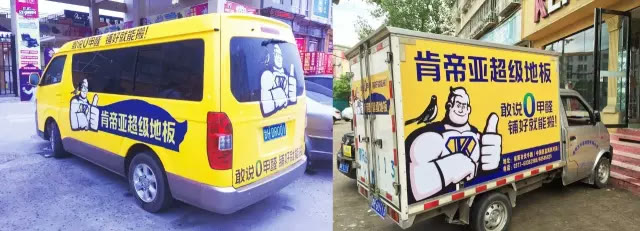
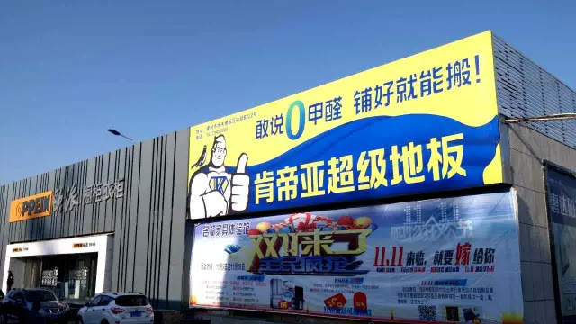
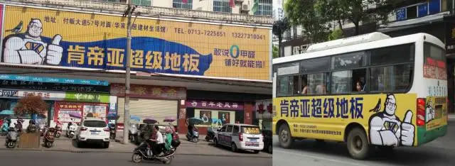
▲ 华与华设计总监徐前程深入一线（左二），一对一指导店主
▲ 升级后的店内环境：肯帝亚武威店
新形象，新门头，为各地的终端门店带来了实实在在的进店率和成交量，肯帝亚全国2000家专卖店正在同步热销超级地板，一场0甲醛的超级地板风暴即将席卷全国。
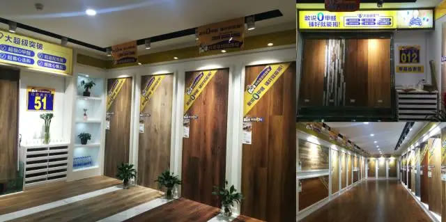
▲ 肯帝亚全国2000家门店将掀起超级地板风暴
4 超级培训工程肯帝亚认为只有专业的业务经理才能更好地服务于经销商；专业的店长和铺装师才能更好的服务于顾客；专业的经销商才能提高终端的销售力。
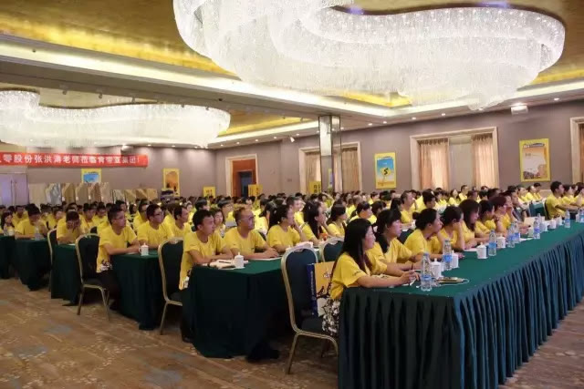
▲ 对全国经销商进行超级业务培训
▲ 在全国范围内进行超级业务经理的培训
为此，华与华策略总监与设计总监深入一线，对肯帝亚的业务经理、店长铺装师以及全国经销商展开超级培训计划。华与华项目组在短短时间内，走遍了国内27座城市， 进行了20余场大区培训，累计培训长达180余小时，覆盖了肯帝亚全国各地经销商所在省市。如此压倒性的时间投入和精力投入将是肯帝亚超级地板成功推向市场的强大助推。只有为客户提供最好的产品和服务，才可以真正打动客户，形成口碑。
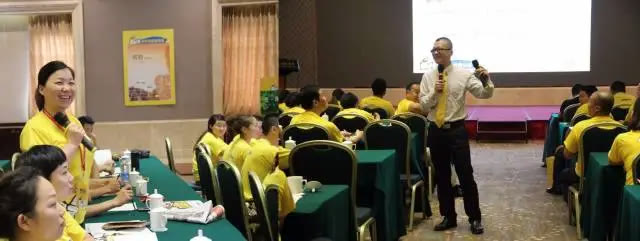
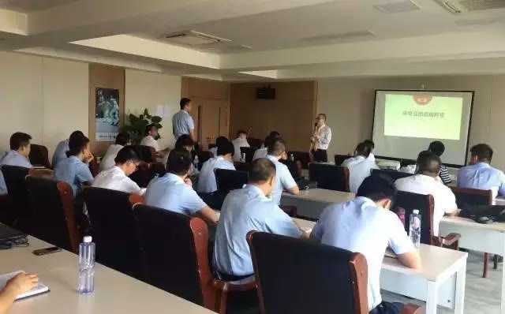
▲ 肯帝亚董事长郦海星为第一期超级店长、五星铺装师颁发奖状
5 一切皆媒体华与华方法：一切皆媒体，让终端全面媒体化。从户外广告、店内布置到小小的物料，肯帝亚先生无处不在。
▲ 肯帝亚终端全面媒体化
6 在人民大会堂举办品牌发布会肯帝亚势要为中国人的家庭装修带来健康之风，终于，2016年10月19日，在人民大会堂——中国最高会议殿堂，举办肯帝亚“超级地板 健康中国”品牌暨新品发布会。会上，肯帝亚集团董事长郦海星，中国林产工业协会秘书长石峰、中国木材与木制品流通协会会长刘能文、中国建筑装饰材料协会弹性地板分会秘书长马金等嘉宾莅临现场，为肯帝亚地板开启新的篇章。
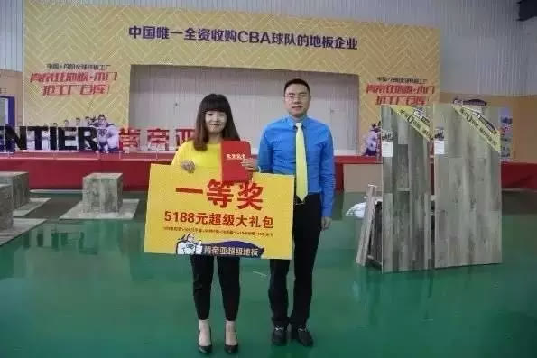
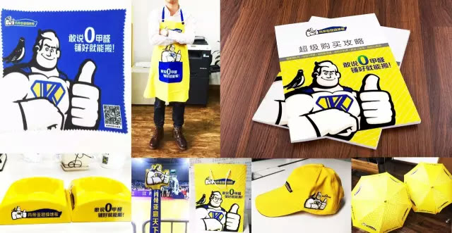
▲ 人民大会堂发布会把肯帝亚超级地板推向新高度
2016年，肯帝亚在郦海星董事长的带领下必将这一宏大愿景进行到底。华与华相信，肯帝亚携「超级地板」，在「开启家装材料超级健康新时代」的使命召唤下，会把「超级健康」的理念，传递到每一位消费者的心中，让千家万户都健康起来。
▲ 别墅院落实际铺装图
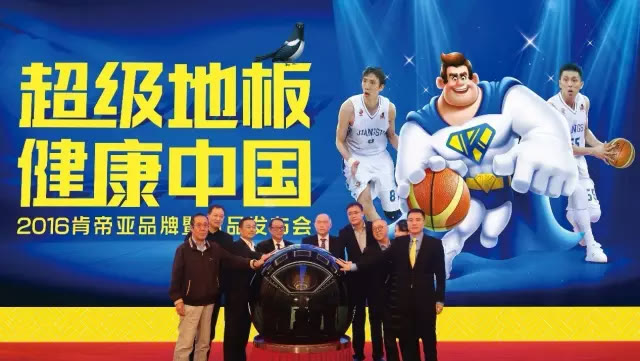
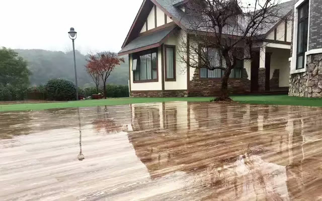
▲ 阳台实际铺装图
▲ 客厅实际铺装图

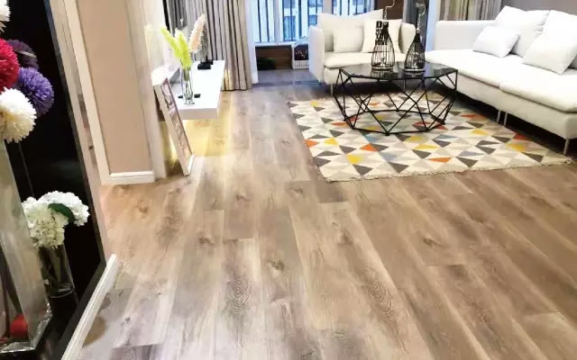
▲ 餐厅实际铺装图
▲ 儿童房实际铺装图
肯拼搏，敢当先！
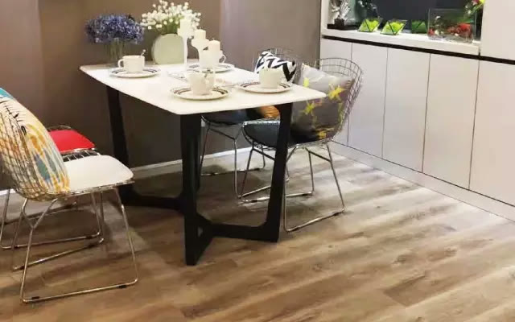
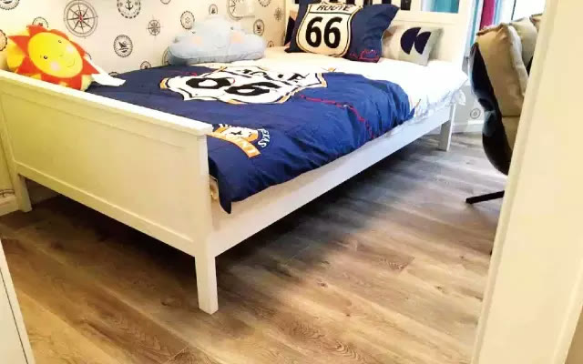